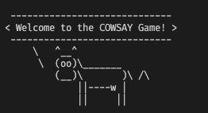
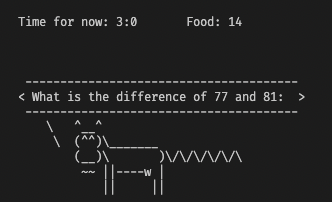
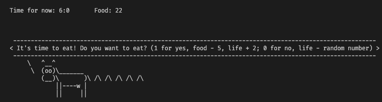

Projet Cowsay
JIANG Yilun
Sommaire
Projet CowsaySommaire1. Présentation du Projet cowsay2. Objectif du projet1. Préliminaires2. Bash3. C4. AutomatesPréliminairesBashcow_kindergartencow_primaryschoolcow_highschoolcow_collegecow_universitysmart_cowcrazy_cowCQuestion 1Question 2Question 3Question 5AutomatesProblème MathématiqueTemp de mangerMort de faim
1. Présentation du Projet cowsay
Le projet débute au premier jour du cours INF203 et s'achève lors la dernière semaine de cours. Cette dernière fait date de rendu (dimanche soir minuit de la dernière semaine). Vous pouvez progresser sur le projet a votre rythme, mais nous vous recommandons de prendre de l’avance par rapport au cours, du moins aucun retard. Par exemple, la partie “Bash” devra être achevée au moment ou les premiers cours de “C” débuteront.
2. Objectif du projet
L’objectif du projet est de découvrir le monde merveilleux de “cowsay”. Au cours du projet, vous réaliserez les objectifs suivants:
1. Préliminaires
Découvrir la commande cowsay a travers son manuel (manpage) et l’ensemble des options qu’elle contient.
2. Bash
Implémenter un script Bash qui fait réciter a la vache la suite des nombres premiers, des nombres de Fibonacci, ou toute autre suite exotique de votre choix.
3. C
Recoder cowsay en C, avec de nouvelles fonctionnalités additionnelles de votre choix (comme par exemple la longueur de la queue).
4. Automates
En s’appuyant sur la théorie des automates, implementer un “cow-Tamagoshi” qu’il s’agit de nourrir et faire survivre aussi longtemps que possible.
Préliminaires
Découvrir du code cowsay:
xxxxxxxxxx11cowsay -hNous avons donc le résultat suivant:
xxxxxxxxxx31cow{say,think} version 3.03, (c) 1999 Tony Monroe2Usage: cowsay [-bdgpstwy] [-h] [-e eyes] [-f cowfile]3[-l] [-n] [-T tongue] [-W wrapcolumn] [message]
Nous apprenons donc que le projet cowsay contient en fait deux commandes, l'une appelée Cowsay et l'autre Cowthink. Cowsay utilise des lignes droites pour relier la vache aux mots prononcés, tandis que cowthink utilise des cercles.
Par exemple, nous utilise cowsay en première:
xxxxxxxxxx11cowsay "Hello, my name is JIANG Yilun"Avec les résultats suivant:
xxxxxxxxxx81_______________________________2< Hello, my name is JIANG Yilun >3-------------------------------4\ ^__^5\ (oo)\_______6(__)\ )\/\7||----w |8|| ||
Ensuit, nous utilise le commande cowthink:
xxxxxxxxxx11cowthink "Hello, my name is JIANG Yilun"Avec les résultats suivant:
xxxxxxxxxx81_______________________________2( Hello, my name is JIANG Yilun )3-------------------------------4o ^__^5o (oo)\_______6(__)\ )\/\7||----w |8|| ||
En fait, le cowsay ne se limite pas à la forme de la vache. Apres nous utilisons le commande cowsay -l, nous pouvons constater que nous avons en fait de nombreux modèles à choisir:
xxxxxxxxxx71$ cowsay -l2Cow files in /opt/homebrew/Cellar/cowsay/3.04_1/share/cows:3beavis.zen blowfish bong bud-frogs bunny cheese cower daemon default dragon4dragon-and-cow elephant elephant-in-snake eyes flaming-sheep ghostbusters5head-in hellokitty kiss kitty koala kosh luke-koala meow milk moofasa moose6mutilated ren satanic sheep skeleton small stegosaurus stimpy supermilker7surgery three-eyes turkey turtle tux udder vader vader-koala wwwPar exemple, on peut utilise la forme sheep:
xxxxxxxxxx121$ cowsay -f sheep hello2 _______ 3< hello >4 ------- 5 \6 \7 __ 8 UooU\.'@@@@@@`.9 \__/(@@@@@@@@@@)10 (@@@@@@@@)11 `YY~~~~YY'12 || ||On peut aussi utiliser le vase avec des tuyaux:
xxxxxxxxxx111$ ll | cowsay2 ________________________________________ 3/ total 8 -rw-r--r--@ 1 yilunjiang staff \4| 3.6K Apr 24 15:03 |5\ rapport_cowsay_JIANGYilun.md /6 ---------------------------------------- 7 \ ^__^8 \ (oo)\_______9 (__)\ )\/\10 ||----w |11 || ||En fait, la sortie de cowsay est très pauvre - pratiquement impossible à visualiser très bien. Mais si nous ajoutons la commande -n:
xxxxxxxxxx101$ ll | cowsay -n2 __________________________________________________________________________________ 3/ total 16 \4\ -rw-r--r--@ 1 yilunjiang staff 4.2K Apr 24 15:09 rapport_cowsay_JIANGYilun.md /5 ---------------------------------------------------------------------------------- 6 \ ^__^7 \ (oo)\_______8 (__)\ )\/\9 ||----w |10 || ||De cette façon, les informations décrites peuvent être lues de manière plus visuelle.
La commande cowsay a en fait ces petits extras, par exemple, nous pouvons changer les yeux de la vache:
xxxxxxxxxx91$ cowsay -e -- "Hello, my name is JIANG Yilun" 2 _______________________________ 3< Hello, my name is JIANG Yilun >4 ------------------------------- 5 \ ^__^6 \ (--)\_______7 (__)\ )\/\8 ||----w |9 || ||Nous avons même réussi à lui faire cracher sa langue:
xxxxxxxxxx91$ cowsay -T U "Hello, my name is JIANG Yilun" 2 _______________________________ 3< Hello, my name is JIANG Yilun >4 ------------------------------- 5 \ ^__^6 \ (oo)\_______7 (__)\ )\/\8 U ||----w |9 || ||Bash
En fait, le code présenté ci-dessous a été modifié une deuxième fois (après avoir vu la vache folle) et comporte deux sections distinctes : une avec un argument et une sans.
cow_kindergarten
xxxxxxxxxx261###2 # @Author: JIANG Yilun3 # @Date: 2022-04-24 15:15:214 # @LastEditTime: 2022-04-24 17:55:565 # @LastEditors: JIANG Yilun6 # @Description: 7 # @FilePath: /Projet_cowsay_L1S2/cow_kindergarten.sh8### 9
10if [ $# -eq 0 ]; then11 temp=1012 while [ $temp -gt 0 ]; do13 clear14 cowsay $temp15 sleep 116 temp=$((temp-1))17 done18else19 temp=$120 while [ $temp -gt 0 ]; do21 clear22 cowsay $temp23 sleep 124 temp=$((temp-1))25 done26fi
cow_primaryschool
xxxxxxxxxx281###2 # @Author: JIANG Yilun3 # @Date: 2022-04-24 15:33:124 # @LastEditTime: 2022-04-24 17:54:015 # @LastEditors: JIANG Yilun6 # @Description: 7 # @FilePath: /Projet_cowsay_L1S2/cow_primaryschool.sh8### 9
10i=111if [ $# -eq 0 ]; then12 echo "Saissez un nombre:"13 read nombre14 while [ $i -le $nombre ]; do15 clear16 cowsay $i17 sleep 118 i=$((i+1))19 done20else21 nombre=$122 while [ $i -le $nombre ]; do23 clear24 cowsay $i25 sleep 126 i=$((i+1))27 done28fi
cow_highschool
xxxxxxxxxx291###2 # @Author: JIANG Yilun3 # @Date: 2022-04-24 15:37:564 # @LastEditTime: 2022-04-24 17:52:245 # @LastEditors: JIANG Yilun6 # @Description: 7 # @FilePath: /Projet_cowsay_L1S2/cow_highschool.sh8### 9
10i=111
12if [ $# -eq 0 ]; then13 echo "Saissez un nombre:"14 read nombre15 while [ $i -le $nombre ]; do16 clear17 cowsay $(($i*$i))18 sleep 119 i=$((i+1))20 done21else22 nombre=$123 while [ $i -le $nombre ]; do24 clear25 cowsay $(($i*$i))26 sleep 127 i=$((i+1))28 done29fi
cow_college
xxxxxxxxxx341###2 # @Author: JIANG Yilun3 # @Date: 2022-04-24 15:41:004 # @LastEditTime: 2022-04-24 17:44:135 # @LastEditors: JIANG Yilun6 # @Description: 7 # @FilePath: /Projet_cowsay_L1S2/cow_college.sh8### 9
10# nombres de Finonacci11
12i=013j=114
15if [ $# -eq 0 ]; then16 echo "Saissez un nombre:"17 read nombre18 while [ $j -lt $nombre ]; do19 cowsay $j20 temp=$((i+j))21 i=$j22 j=$temp23 sleep 124 done25else26 nombre=$127 while [ $j -lt $nombre ]; do28 cowsay $j29 temp=$((i+j))30 i=$j31 j=$temp32 sleep 133 done34fi
cow_university
xxxxxxxxxx631###2 # @Author: JIANG Yilun3 # @Date: 2022-04-24 15:55:254 # @LastEditTime: 2022-04-24 17:42:315 # @LastEditors: JIANG Yilun6 # @Description: 7 # @FilePath: /Projet_cowsay_L1S2/cow_university.sh8### 9
10nbr_premier() {11 while [ $i -le $m ]12 do13 p=$(($m%$i))14 if [ $p -eq 0 ]15 then16 break17 else18 i=$((i+1))19 fi20 if [ $i -eq $m ]21 then22 if [ $m -eq $n ]23 then24 echo "$m est un nombre premier"25 cowsay -T U "$m"26 else27 echo "$m est un nombre premier"28 cowsay "$m"29 fi30 fi31 done32}33
34if [ $# -eq 0 ]; then35 echo "donnez le dernier nombres premiers à calculer"36 read n37 i=2 #le premier nombre premier38 a=$(bc <<< "scale=0; sqrt($n)") #scale=0 n'affiche pas les décimale, scale=1 la première, etc... sqrt() calcule la racine carré. marche grace à la commande bc39 m=340 echo "voici sa suite de nombres premiers de $i à $n"41 while [ $m -le $n ]42 do43 echo m:$m44 i=245 nbr_premier $m46 m=$((m+1))47 sleep 148 done49else50 n=$151 i=2 #le premier nombre premier52 a=$(bc <<< "scale=0; sqrt($n)") #scale=0 n'affiche pas les décimale, scale=1 la première, etc... sqrt() calcule la racine carré. marche grace à la commande bc53 m=354 echo "voici sa suite de nombres premiers de $i à $n"55 while [ $m -le $n ]56 do57 echo m:$m58 i=259 nbr_premier $m60 m=$((m+1))61 sleep 162 done63fi
smart_cow
xxxxxxxxxx171###2 # @Author: JIANG Yilun3 # @Date: 2022-04-24 16:27:304 # @LastEditTime: 2022-04-24 16:40:095 # @LastEditors: JIANG Yilun6 # @Description: 7 # @FilePath: /Projet_cowsay_L1S2/smart_cow.sh8### 9
10
11if [ $# -eq 0 ]; then12 echo "Donner l'expression à calculer:"13 read expression14 cowsay -e $(echo "$expression" | bc) $expression15else16 cowsay -e $(echo "$1" | bc) $117fi
crazy_cow
xxxxxxxxxx301###2 # @Author: JIANG Yilun3 # @Date: 2022-04-24 16:44:044 # @LastEditTime: 2022-04-24 17:57:025 # @LastEditors: JIANG Yilun6 # @Description: 7 # @FilePath: /Projet_cowsay_L1S2/crazy_cow.sh8### 9
10for var in "$@"11do12 if [[ "$var" == "-h" || "$var" == "--help" ]]; then13 echo "Usage: $0 [OPTION]... [FILE]..."14 echo "Print a crazy cow."15 elif [[ "$var" == "-v" || "$var" == "--version" ]]; then16 echo "crazy_cow.sh version 1.0"17 elif [[ "$var" == "-a" || "$var" == "--addition" ]]; then18 sh cow_primaryschool.sh ${@: -1}19 elif [[ "$var" == "-c" || "$var" == "--countdown" ]]; then20 sh cow_kindergarten.sh ${@: -1}21 elif [[ "$var" == "-s" || "$var" == "--square" ]]; then22 sh cow_highschool.sh ${@: -1}23 elif [[ "$var" == "-f" || "$var" == "--finonacci" ]]; then24 sh cow_college.sh ${@: -1}25 elif [[ "$var" == "-p" || "$var" == "--premiere" ]]; then26 sh cow_university.sh ${@: -1}27 elif [[ "$var" == "-S" || "$var" == "--smart" ]]; then28 sh smart_cow.sh ${@: -1}29 fi30done
C
Question 1
affiche_vache:
xxxxxxxxxx161int affiche_vache()2{3 printf("\n");4 printf(" \\ ^__^\n");5 printf(" \\ (oo)\\_______\n");6 printf(" (__)\\ )\\/\\\n");7 printf(" ||----w |\n");8 printf(" || ||\n");9 printf("\n");10 return 0;11}12
13int main()14{15 affiche_vache();16}Après la compilation, nous avons pu obtenir les résultats suivants:
xxxxxxxxxx71$ gcc newcow.c && ./a.out 2
3 \ ^__^4 \ (oo)\_______5 (__)\ )\/\6 ||----w |7 || ||
Question 2
xxxxxxxxxx761/*2 * @Author: JIANG Yilun3 * @Date: 2022-04-24 18:07:274 * @LastEditTime: 2022-04-24 18:44:295 * @LastEditors: JIANG Yilun6 * @Description: 7 * @FilePath: /Projet_cowsay_L1S2/newcow.c8 */9
10
13int affiche_vache (char *eyes, char *tongue)14{15 if (eyes == NULL && tongue == NULL){16 printf("\n");17 printf(" \\ ^__^\n");18 printf(" \\ (oo)\\_______\n");19 printf(" (__)\\ )\\/\\\n");20 printf(" ||----w |\n");21 printf(" || ||\n");22 printf("\n");23 return 0;24 }25 else if (eyes == NULL && tongue != NULL){26 printf("\n");27 printf(" \\ ^__^\n");28 printf(" \\ (oo)\\_______\n");29 printf(" (__)\\ )\\/\\\n");30 printf(" %s ||----w |\n",tongue);31 printf(" || ||\n");32 printf("\n");33 return 0;34 }35 else if (eyes != NULL && tongue == NULL){36 printf("\n");37 printf(" \\ ^__^\n");38 printf(" \\ (%s)\\_______\n",eyes);39 printf(" (__)\\ )\\/\\\n");40 printf(" ||----w |\n");41 printf(" || ||\n");42 printf("\n");43 return 0;44 }45 else46 {47 printf("\n");48 printf(" \\ ^__^\n");49 printf(" \\ (%s)\\_______\n",eyes);50 printf(" (__)\\ )\\/\\\n");51 printf(" %s ||----w |\n",tongue);52 printf(" || ||\n");53 printf("\n");54 return 0;55 }56}57
58int main (int argc, char *argv[])59{60 char *eyes = NULL;61 char *tongue = NULL;62 char *message = NULL;63 char *tail = NULL;64 for (int i = 1; i < argc; i++)65 {66 if (strcmp(argv[i], "-e") == 0 || strcmp(argv[i], "--eyes") == 0)67 {68 eyes = argv[i+1];69 }70 if (strcmp(argv[i], "-t") == 0 || strcmp(argv[i], "--tongue") == 0)71 {72 tongue = argv[i+1];73 }74 }75 affiche_vache(eyes, tongue);76}Après la compilation, nous avons pu obtenir les résultats suivants:
xxxxxxxxxx71$ gcc test.c && ./a.out -e AA -t U2
3 \ ^__^4 \ (AA)\_______5 (__)\ )\/\6 U ||----w |7 || ||
Question 3
xxxxxxxxxx871/*2 * @Author: JIANG Yilun3 * @Date: 2022-04-24 18:07:274 * @LastEditTime: 2022-04-24 21:10:245 * @LastEditors: JIANG Yilun6 * @Description:7 * @FilePath: /Projet_cowsay_L1S2/newcow.c8 */9
10
14int affiche_vache(int *length, char *message, char *eyes, char *tongue, int *tail)15{16 printf(" -");17 for (int i = 0; i < *length; i++)18 {19 printf("-");20 }21 printf("\n");22 printf("< %s >\n", message);23 printf(" -");24 for (int i = 0; i < *length; i++)25 {26 printf("-");27 }28 printf("\n");29 printf(" \\ ^__^\n");30 printf(" \\ (%s)\\_______\n", eyes);31 printf(" (__)\\ )\\");32 for (int i = 0; i < *tail; i++)33 {34 printf("/\\");35 }36 printf("\n");37 printf(" %s ||----w |\n", tongue);38 printf(" || ||\n");39 printf("\n");40 return 0;41}42
43void update() { printf("\033[H\033[J"); }44
45void gotoxy(x, y) { printf("\033[%d;%dH", x, y); }46
47int main(int argc, char *argv[])48{49 char *eyes = "oo"; // default eyes50 char *tongue = " "; // default tongue51 char *message = "--help to display help"; // default message52 int tail = 1; // default tail53 for (int i = 1; i < argc; i++)54 {55 if (strcmp(argv[i], "-e") == 0 || strcmp(argv[i], "--eyes") == 0)56 {57 eyes = argv[i + 1];58 }59 if (strcmp(argv[i], "-T") == 0 || strcmp(argv[i], "--tongue") == 0)60 {61 tongue = argv[i + 1];62 }63 if (strcmp(argv[i], "-m") == 0 || strcmp(argv[i], "--message") == 0)64 {65 message = argv[i + 1];66 }67 if (strcmp(argv[i], "-t") == 0 || strcmp(argv[i], "--tail") == 0)68 {69 tail = atoi(argv[i + 1]);70 }71 if (strcmp(argv[i], "-h") == 0 || strcmp(argv[i], "--help") == 0)72 {73 printf("\n");74 printf("Usage: newcow [OPTION]...\n");75 printf("\n");76 printf("Options:\n");77 printf(" -e, --eyes=STRING eyes of the cow (default: oo)\n");78 printf(" -t, --tongue=STRING tongue of the cow (default: )\n");79 printf(" -m, --message=STRING message to display (default: none)\n");80 printf(" -h, --help display this help and exit\n");81 printf("\n");82 return 0;83 }84 }85 int length = strlen(message) + 1;86 affiche_vache(&length, message, eyes, tongue, &tail);87}On peut ajouter d'argument "eyes" ou argument "tongue".
S'il n'y a pas de message d'entrée:
xxxxxxxxxx91$ gcc newcow.c && ./a.out -e AA -T U2 ------------------------3< --help to display help >4 ------------------------5 \ ^__^6 \ (AA)\_______7 (__)\ )\/\8 U ||----w |9 || ||
Si je veux obtenir des informations d'aide:
xxxxxxxxxx91$ gcc newcow.c && ./a.out -h 2
3Usage: newcow [OPTION]...4
5Options:6 -e, --eyes=STRING eyes of the cow (default: oo)7 -t, --tongue=STRING tongue of the cow (default: )8 -m, --message=STRING message to display (default: none)9 -h, --help display this help and exit
Bien sûr, la possibilité d'afficher des messages est essentielle:
xxxxxxxxxx91$ gcc newcow.c && ./a.out -e AA -T UU -m "Hello, my name is JIANG Yilun"2 -------------------------------3< Hello, my name is JIANG Yilun >4 -------------------------------5 \ ^__^6 \ (AA)\_______7 (__)\ )\/\8 UU ||----w |9 || ||
En même temps, nous pouvons définir la longueur du tail:
xxxxxxxxxx91$ gcc newcow.c && ./a.out -e AA -T UU -m "Hello, my name is JIANG Yilun" -t 102 -------------------------------3< Hello, my name is JIANG Yilun >4 -------------------------------5 \ ^__^6 \ (AA)\_______7 (__)\ )\/\/\/\/\/\/\/\/\/\/\/\8 UU ||----w |9 || ||Question 5
xxxxxxxxxx801/*2 * @Author: JIANG Yilun3 * @Date: 2022-04-25 13:34:084 * @LastEditTime: 2022-04-26 17:43:295 * @LastEditors: JIANG Yilun6 * @Description:7 * @FilePath: /Projet_cowsay_L1S2/reading_cow.c8 */9
10
16
18void affiche_vache(int *length, char *message, char *eyes, char *tongue, int *tail)19{20 printf(" -");21 for (int i = 0; i < *length; i++)22 {23 printf("-");24 }25 printf("\n");26 printf("< %s >\n", message);27 printf(" -");28 for (int i = 0; i < *length; i++)29 {30 printf("-");31 }32 printf("\n");33 printf(" \\ ^__^\n");34 printf(" \\ (%s)\\_______\n", eyes);35 printf(" (__)\\ )\\");36 for (int i = 0; i < *tail; i++)37 {38 printf("/\\");39 }40 printf("\n");41 printf(" %s ||----w |\n", tongue);42 printf(" || ||\n");43 printf("\n");44}45
46void update() { printf("\033[H\033[J"); }47
48void gotoxy(x, y) { printf("\033[%d;%dH", x, y); }49
50int main(int argc, char *argv[])51{52 FILE *ficher = NULL;53 ficher = fopen(argv[1], "r");54 if (ficher == NULL)55 {56 printf("Error opening file\n");57 return 1;58 }59 else60 {61 char *eyes = "oo"; // default eyes62 char *tongue = " "; // default tongue63 char message[MAX_LENGTH] = ""; // default message64 int tail = 1; // default tail65 int length = 0;66 char c;67 while ((c = fgetc(ficher)) != EOF)68 {69 length++;70 affiche_vache(&length, message, eyes, &c, &tail);71 sleep(1);72 update();73 message[length - 1] = c;74 message[length] = '\0';75 }76 fclose(ficher);77 length++;78 affiche_vache(&length, message, eyes, tongue, &tail);79 }80}Dans le ficher mot:
bonjour, je m'appelle JIANG Yilun
xxxxxxxxxx201$ gcc reading_cow.c && ./a.out mot2
3 ---------4< bonjour >5 ---------6 \ ^__^7 \ (oo)\_______8 (__)\ )\/\9 ||----w |10 || ||11
12 -----------------------------------13< bonjour, je m'appelle JIANG Yilun >14 -----------------------------------15 \ ^__^16 \ (oo)\_______17 (__)\ )\/\18 ||----w |19 || ||20
La vache épellera le contenu du document un mot à la fois et mettra le caractère suivant dans sa tongue.
Dans ce fichier, j'ai également utilisé affiche_vache pour générer la apparition de la vache.
Automates
Je n'ai pas réussi à concevoir un automate, car je ne pense pas avoir identifié toutes les possibilités. Mais j'ai créé un mini-jeu "CowSay" qui n'utilise pas d'automate.

Les joueurs doivent répondre à des questions de mathématiques pour obtenir de la nourriture, avec une autre chance d'obtenir de la nourriture toutes les heures.
Ce jeu comporte cinq modèles mathématiques : déterminer si un nombre est premier ou non, ajouter, soustraire, multiplier et trouver le mod entre des nombres.
De plus, des événements aléatoires se produiront dans le scénario du jeu et le joueur peut obtenir des effets négatifs, tels que la perte de nourriture ou de life. Ou vous pouvez activer l'effet "ange", qui vous apporte de la nourriture.
En outre, le joueur peut juger de la valeur de la vie par la longueur de la queue.
xxxxxxxxxx6291/*2 * @Author: JIANG Yilun3 * @Date: 2022-04-25 15:51:264 * @LastEditTime: 2022-05-08 14:24:375 * @LastEditors: ThearchyHelios6 * @Description:7 * @FilePath: /Projet_cowsay_L1S2/Tamagoshi-vache.c8 */9
10
16
18/*19 * @description: Update(refresh) the Terminal20 * @param {type}: void21 * @return: void22 */23void update() { printf("\033[H\033[J"); }24
25/*26
27* @description: Make the pointer to x, y in Terminal28* @param {type}: int x, int y29* @return: void30*/31void gotoxy(x, y) { printf("\033[%d;%dH", x, y); }32
33int life = 5; // Define the valeur initial to 534
35/*36
37* @description: Print the etat of the cow38* @param {type}: int life39* @return: void40*/41void etat(int life)42{43 if (life == 0 || life == 10)44 {45 printf("byebyelife");46 }47 else if (life <= 3 && life >= 1 || life <= 9 && life >= 7)48 {49 printf("lifesucks");50 }51 else if (life <= 6 && life >= 4 || life)52 {53 54 printf("liferocks");55 }56}57
58/*59
60* @description: Print the cow61* @param {type}: int *length_vache(for define the length of divise), char *message_vache(To print the message), char *eyes_vache(To print the cow's eyes(in default: "oo")), char *tongue_vache(To print the cow's tongue), int *tail_vache(To print the cow's tail(This is also the life of cow)), int time_tick_vache(To define how much time the anmie will take), int hour, int minite, int food62* @return: void63*/64void affiche_vache(int *length_vache, char *message_vache, char *eyes_vache, char *tongue_vache, int *tail_vache, int time_tick_vache, int hour, int minite, int food)65{66 update();67 for (int i = 0; i < time_tick_vache; i++)68 {69 update();70 gotoxy(0, 0);71 printf("Time for now: %d:%d\tFood: %d\n", hour, minite, food);72 gotoxy(5, 0);73 time_t t;74 t = time(NULL);75 if (t % 2 == 0)76 {77 printf(" -");78 for (int i = 0; i <= *length_vache; i++)79 {80 printf("-");81 }82 printf("\n");83 printf("< %s >\n", message_vache);84 printf(" -");85 for (int i = 0; i <= *length_vache; i++)86 {87 printf("-");88 }89 printf("\n");90 printf(" \\ ^__^\n");91 printf(" \\ (%s)\\_______\n", eyes_vache);92 printf(" (__)\\ )\\");93 for (int i = 0; i < *tail_vache; i++)94 {95 printf("/\\");96 }97 printf("\n");98 printf(" %s ||----w |\n", tongue_vache);99 printf(" || ||\n");100 printf("\n");101 }102 else103 {104 printf(" -");105 for (int i = 0; i <= *length_vache; i++)106 {107 printf("-");108 }109 printf(" \n");110 printf("< %s >\n", message_vache);111 printf(" -");112 for (int i = 0; i <= *length_vache; i++)113 {114 printf("-");115 }116 printf(" \n");117 printf(" \\ ^__^\n");118 printf(" \\ (%s)\\_______\n", "oo");119 printf(" (__)\\ )\\");120 for (int i = 0; i < *tail_vache; i++)121 {122 printf(" /\\");123 }124 printf(" \n");125 printf(" %s ||----w |\n", " ");126 printf(" || ||\n");127 printf(" \n");128 }129 // gotoxy(10, 0);130 sleep(1);131 }132}133
134/*135* @description: count the time136* @param {type}: int *hour, int *minite, int *food137* @return: arr[hour, minite]138*/139void time_count(int time_tick, int hour, int minite, int arr[])140{141 minite += 5;142 if (minite >= 60)143 {144 hour += 1;145 minite -= 60;146 }147 if (hour >= 24)148 {149 hour -= 24;150 }151 arr[0] = hour;152 arr[1] = minite;153}154
155/*156* @description: check if the enter number is a prime number157* @param {type}: int nombre158* @return: int159*/160
161int check_prime_number(int nombre)162{163 int i;164 for (i = 2; i < nombre; i++)165 {166 if (nombre % i == 0)167 {168 return 0;169 }170 }171 return 1;172}173
174/*175* @description: Main function176* @param {type}: int argc, char *argv[]177* @return: int178*/179
180int main(int argc, char *argv[])181{182 // Begin the game, define the variables183 int tail = 1;184 int life = 5;185 int food = 10;186 int time_tick = 5;187 char *eyes = "oo";188 char *tongue = " ";189 int minite = 0;190 int hour = 0;191
192 // Define the opening message193 char message[MAX_LENGTH] = "Welcome to the COWSAY Game!";194 int length = strlen(message);195 tongue = "U ";196 affiche_vache(&length, message, eyes, tongue, &tail, time_tick, hour, minite, food);197
198 // Define the message of providing the name of the player199 strcpy(message, "Please enter your name: ");200 // *message = "Please enter your name: ";201 length = strlen(message);202 affiche_vache(&length, message, eyes, tongue, &tail, 2, hour, minite, food);203
204 // Define the name of the player and get the name from keyboard.205 char name[20];206 scanf("%s", name);207
208 // Welcome the player209 strcpy(message, "Hello ");210 strcat(message, name);211 length = strlen(message);212 affiche_vache(&length, message, eyes, tongue, &tail, time_tick, hour, minite, food);213
214 // Define the speed of the game, (4) for super fast (developer mode xd)215 strcpy(message, "Please choose the speed of the game: (1) for slow, (2) for medium (default), (3) for fast");216 length = strlen(message);217 affiche_vache(&length, message, eyes, tongue, &tail, 1, hour, minite, food);218
219 // Define the speed of the game, and get the value from keyboard.220 int game_speed;221 scanf("%d", &game_speed);222
223 if (game_speed == 1)224 {225 strcpy(message, "You chose the slow speed, the game will be played in 10 seconds");226 length = strlen(message);227 affiche_vache(&length, message, eyes, tongue, &tail, time_tick, hour, minite, food);228 time_tick = 8;229 }230 else if (game_speed == 2)231 {232 strcpy(message, "You chose the medium speed, the tivk will be 5 seconds");233 length = strlen(message);234 affiche_vache(&length, message, eyes, tongue, &tail, time_tick, hour, minite, food);235 time_tick = 5;236 }237 else if (game_speed == 3)238 {239 strcpy(message, "You chose the fast speed, the tick will be 3 seconds");240 length = strlen(message);241 affiche_vache(&length, message, eyes, tongue, &tail, time_tick, hour, minite, food);242 time_tick = 3;243 }244 else if (game_speed == 4)245 {246 strcpy(message, "You chose the super fast speed, the tick will be 1 seconds");247 length = strlen(message);248 affiche_vache(&length, message, eyes, tongue, &tail, time_tick, hour, minite, food);249 time_tick = 1;250 }251 else252 {253 strcpy(message, "You chose the wrong thing, so the game will play in default speed, the tick will be 5 seconds");254 length = strlen(message);255 affiche_vache(&length, message, eyes, tongue, &tail, time_tick, hour, minite, food);256 time_tick = 5;257 }258
259 int i = 0; // i is the number of the loop, not using later but just left there if needed260
261 while (life > 0 && life < 10)262 {263 // Count the time, with returning the value of the time in an array: arr[hour, minite]264 int arr[2];265 strcpy(message, "...");266 length = strlen(message);267 time_count(time_tick, hour, minite, arr);268 hour = arr[0];269 minite = arr[1];270 tail = life;271 affiche_vache(&length, message, eyes, tongue, &tail, time_tick, hour, minite, food);272
273 i++;274 update();275
276 // Check if minite is equal to 60, if yes its time to play a game/277 if (minite == 0)278 {279 // Define the message of playing game.280 strcpy(message, "It's time to think about something!");281 length = strlen(message);282 affiche_vache(&length, message, eyes, tongue, &tail, time_tick, hour, minite, food);283 284 // Define a random number between 1 to 5, to chose which kind of math problem we will use.285 int random_number = rand() % (5) + 1;286 srand(time(NULL)); // Initialize the random number generator.287 288 // If random is equal to 1 then we will use the prime problem.289 if (random_number == 1)290 {291 // Define the message of the prime problem, from 0 to 100.292 int nombre_premier = rand() % 100;293 // Initialize the message to be displayed.294 strcpy(message, "Is it a prime number? (1) for yes, (2) for no: ");295 // Make the prime number to be displayed.296 char str_nombre_premier[MAX_LENGTH] = "";297 sprintf(str_nombre_premier, "%d", nombre_premier);298 // Make message and prime number to be together.299 strcat(message, str_nombre_premier);300
301 length = strlen(message);302 affiche_vache(&length, message, eyes, tongue, &tail, time_tick, hour, minite, food);303
304 // Get the answer from keyboard.305 int answer = 0;306 scanf("%d", &answer);307 if (answer == 1)308 {309 if (check_prime_number(nombre_premier))310 {311 strcpy(message, "Yes, it is a prime number! You got it! Food + 2");312 length = strlen(message);313 eyes = "^^";314 tongue = "~~";315 affiche_vache(&length, message, eyes, tongue, &tail, time_tick, hour, minite, food);316 food += 2;317 }318 else319 {320 strcpy(message, "No, it is not a prime number! You lost it!");321 length = strlen(message);322 affiche_vache(&length, message, eyes, tongue, &tail, time_tick, hour, minite, food);323 }324 }325 else326 {327 if (check_prime_number(nombre_premier))328 {329 strcpy(message, "Yes, it is a prime number! You lost it!");330 length = strlen(message);331 affiche_vache(&length, message, eyes, tongue, &tail, time_tick, hour, minite, food);332 }333 else334 {335 strcpy(message, "No, it is not a prime number! You got it! Food + 2");336 length = strlen(message);337 eyes = "^^";338 tongue = "~~";339 affiche_vache(&length, message, eyes, tongue, &tail, time_tick, hour, minite, food);340 food += 2;341 }342 }343 }344 // If random is equal to 2 then we will use the addition problem.345 else if (random_number == 2)346 {347 // Define the 2 values of the addition problem, from 0 to 100.348 int nombre_1 = rand() % 100;349 int nombre_2 = rand() % 100;350 // Initialize the message to be displayed.351 strcpy(message, "What is the sum of ");352 // Make the two numbers to be displayed.353 char str_nombre_1[MAX_LENGTH] = "";354 char str_nombre_2[MAX_LENGTH] = "";355 sprintf(str_nombre_1, "%d", nombre_1);356 sprintf(str_nombre_2, "%d", nombre_2);357 strcat(message, str_nombre_1);358 strcat(message, " and ");359 strcat(message, str_nombre_2);360 strcat(message, ": ");361
362 length = strlen(message);363 affiche_vache(&length, message, eyes, tongue, &tail, time_tick, hour, minite, food);364
365 // Get the answer from keyboard.366 int answer = 0;367 scanf("%d", &answer);368 if (answer == nombre_1 + nombre_2)369 {370 strcpy(message, "Yes, it is the sum of ");371 strcat(message, str_nombre_1);372 strcat(message, " and ");373 strcat(message, str_nombre_2);374 strcat(message, "! You got it! Food + 2");375 length = strlen(message);376 eyes = "^^";377 tongue = "~~";378 affiche_vache(&length, message, eyes, tongue, &tail, time_tick, hour, minite, food);379 food += 2;380 }381 else382 {383 strcpy(message, "No, it is not the sum of ");384 strcat(message, str_nombre_1);385 strcat(message, " and ");386 strcat(message, str_nombre_2);387 strcat(message, "! You lost it!");388 length = strlen(message);389 affiche_vache(&length, message, eyes, tongue, &tail, time_tick, hour, minite, food);390 }391 }392 // multiplication393 else if (random_number == 3)394 {395 int nombre_1 = rand() % 100;396 int nombre_2 = rand() % 10;397 strcpy(message, "What is the product of ");398 char str_nombre_1[MAX_LENGTH] = "";399 char str_nombre_2[MAX_LENGTH] = "";400 sprintf(str_nombre_1, "%d", nombre_1);401 sprintf(str_nombre_2, "%d", nombre_2);402 strcat(message, str_nombre_1);403 strcat(message, " and ");404 strcat(message, str_nombre_2);405 strcat(message, ": ");406
407 length = strlen(message);408 affiche_vache(&length, message, eyes, tongue, &tail, time_tick, hour, minite, food);409 int answer = 0;410 scanf("%d", &answer);411 if (answer == nombre_1 * nombre_2)412 {413 strcpy(message, "Yes, it is the product of ");414 strcat(message, str_nombre_1);415 strcat(message, " and ");416 strcat(message, str_nombre_2);417 strcat(message, "! You got it! Food + 2");418 length = strlen(message);419 eyes = "^^";420 tongue = "~~";421 affiche_vache(&length, message, eyes, tongue, &tail, time_tick, hour, minite, food);422 food += 2;423 }424 else425 {426 strcpy(message, "No, it is not the product of ");427 strcat(message, str_nombre_1);428 strcat(message, " and ");429 strcat(message, str_nombre_2);430 strcat(message, "! You lost it!");431 length = strlen(message);432 affiche_vache(&length, message, eyes, tongue, &tail, time_tick, hour, minite, food);433 }434 }435 // difference436 else if (random_number == 4)437 {438 int nombre_1 = rand() % 100;439 int nombre_2 = rand() % 100;440 strcpy(message, "What is the difference of ");441 char str_nombre_1[MAX_LENGTH] = "";442 char str_nombre_2[MAX_LENGTH] = "";443 sprintf(str_nombre_1, "%d", nombre_1);444 sprintf(str_nombre_2, "%d", nombre_2);445 strcat(message, str_nombre_1);446 strcat(message, " and ");447 strcat(message, str_nombre_2);448 strcat(message, ": ");449
450 length = strlen(message);451 affiche_vache(&length, message, eyes, tongue, &tail, time_tick, hour, minite, food);452 int answer = 0;453 scanf("%d", &answer);454 if (answer == nombre_1 - nombre_2)455 {456 strcpy(message, "Yes, it is the difference of ");457 strcat(message, str_nombre_1);458 strcat(message, " and ");459 strcat(message, str_nombre_2);460 strcat(message, "! You got it! Food + 2");461 length = strlen(message);462 eyes = "^^";463 tongue = "~~";464 affiche_vache(&length, message, eyes, tongue, &tail, time_tick, hour, minite, food);465 food += 2;466 }467 else468 {469 strcpy(message, "No, it is not the difference of ");470 strcat(message, str_nombre_1);471 strcat(message, " and ");472 strcat(message, str_nombre_2);473 strcat(message, "! You lost it!");474 length = strlen(message);475 affiche_vache(&length, message, eyes, tongue, &tail, time_tick, hour, minite, food);476 }477 }478 // mod479 else if (random_number == 5)480 {481 int nombre_1 = rand() % 100;482 int nombre_2 = rand() % 10;483 strcpy(message, "What is the mod of ");484 char str_nombre_1[MAX_LENGTH] = "";485 char str_nombre_2[MAX_LENGTH] = "";486 sprintf(str_nombre_1, "%d", nombre_1);487 sprintf(str_nombre_2, "%d", nombre_2);488 strcat(message, str_nombre_1);489 strcat(message, " and ");490 strcat(message, str_nombre_2);491 strcat(message, ": ");492
493 length = strlen(message);494 affiche_vache(&length, message, eyes, tongue, &tail, time_tick, hour, minite, food);495 int answer = 0;496 scanf("%d", &answer);497 if (answer == nombre_1 % nombre_2)498 {499 strcpy(message, "Yes, it is the mod of ");500 strcat(message, str_nombre_1);501 strcat(message, " and ");502 strcat(message, str_nombre_2);503 strcat(message, "! You got it! Food + 2");504 length = strlen(message);505 eyes = "^^";506 tongue = "~~";507 affiche_vache(&length, message, eyes, tongue, &tail, time_tick, hour, minite, food);508 food += 2;509 }510 else511 {512 strcpy(message, "No, it is not the mod of ");513 strcat(message, str_nombre_1);514 strcat(message, " and ");515 strcat(message, str_nombre_2);516 strcat(message, "! You lost it!");517 length = strlen(message);518 affiche_vache(&length, message, eyes, tongue, &tail, time_tick, hour, minite, food);519 }520 }521 }522
523 // If it's 6h, 12h, 18h, 24h then its time to eat, the player can choose if they want to feed the cow or not524 if (hour % 6 == 0 && minite == 0)525 {526 strcpy(message, "It's time to eat! Do you want to eat? (1 for yes, food - 5, life + 2; 0 for no, life - random number)");527 length = strlen(message);528 affiche_vache(&length, message, eyes, tongue, &tail, time_tick, hour, minite, food);529 530 // Ask for the player if he wants to feed531 int answer = 0;532 scanf("%d", &answer);533 if (answer == 1)534 {535 if (food > 0)536 {537 food -= 5;538 strcpy(message, "You ate! Food - 5");539 length = strlen(message);540 life += 2;541 eyes = "^^";542 tongue = "~~";543 affiche_vache(&length, message, eyes, tongue, &tail, time_tick, hour, minite, food);544 }545 else546 {547 strcpy(message, "You don't have enough food!");548 length = strlen(message);549 int random_number = (rand() % (life - 2)) + 1;550 life -= random_number;551 eyes = "~~";552 tongue = "^";553 affiche_vache(&length, message, eyes, tongue, &tail, time_tick, hour, minite, food);554 }555 }556 else557 {558 int random_number = (rand() % (life - 2)) + 1;559 life -= random_number;560 strcpy(message, "You didn't eat! Life - ");561 char str_random_number[MAX_LENGTH] = "";562 sprintf(str_random_number, "%d", random_number);563 strcat(message, str_random_number);564 length = strlen(message);565 eyes = "~~";566 tongue = "^";567 affiche_vache(&length, message, eyes, tongue, &tail, time_tick, hour, minite, food);568 }569 }570 // random event571 // Thunder: life - 2572 if (hour + minite == rand() % 100)573 {574 strcpy(message, "It's a thunder! You lost life!");575 length = strlen(message);576 life -= 2;577 eyes = "~~";578 tongue = "^";579 affiche_vache(&length, message, eyes, tongue, &tail, time_tick, hour, minite, food);580 }581 // Hunger: food - 4582 else if (hour + minite == rand() % 100)583 {584 strcpy(message, "It's a hunger! You lost food!");585 length = strlen(message);586 food -= 4;587 eyes = "~~";588 tongue = "^";589 affiche_vache(&length, message, eyes, tongue, &tail, time_tick, hour, minite, food);590 }591 // Fire: life - 2 && food - 2592 else if (hour + minite == rand() % 100)593 {594 strcpy(message, "It's a fire! You lost life and food!");595 length = strlen(message);596 life -= 2;597 food -= 2;598 eyes = "~~";599 tongue = "^";600 affiche_vache(&length, message, eyes, tongue, &tail, time_tick, hour, minite, food);601 }602 // Mercy: food + 5603 else if (hour + minite == rand() % 100)604 {605 strcpy(message, "Mercy is coming! Food + 5");606 length = strlen(message);607 eyes = "^^";608 tongue = "~~";609 food += 5;610 affiche_vache(&length, message, eyes, tongue, &tail, time_tick, hour, minite, food);611 }612 }613 if (life <= 0)614 {615 strcpy(message, "You died because of hunger! Game over!");616 length = strlen(message);617 eyes = "xx";618 tongue = "U ";619 affiche_vache(&length, message, eyes, tongue, &tail, time_tick, hour, minite, food);620 }621 else if (life >= 10)622 {623 strcpy(message, "You died because of trop plein! Game over!");624 length = strlen(message);625 eyes = "xx";626 tongue = "U ";627 affiche_vache(&length, message, eyes, tongue, &tail, time_tick, hour, minite, food);628 }629}630
Problème Mathématique
Case addition:

Case difference:

Case nombre prime:

Case multiplier:
Case mod:
Temp de manger

Mort de faim